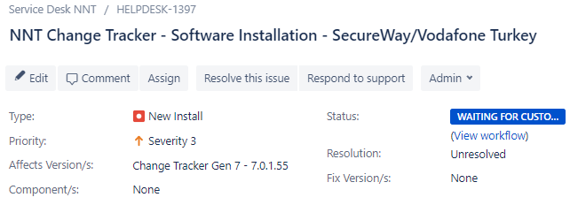

IMPORTANT: This KB article may no longer be accurate or up-to-date. The installation process described in this article has since been updated, and the steps provided may not align with the current procedures.
NNT Software Installation
Most solutions sold by the sales team will require installation by NNT support. Exceptions to this rule are customers who have indicated that they would like to self-install and partner deals. Note, some partners are equipped to install NNT while other will require NNT support to install for them.
Any installation work will start with support receiving what is termed as a Sales Handover Document. This is in fact an Excel spreadsheet which includes all the salient points agreed with the customer. Examples are particular requirements for the installation and when the installation should proceed.
All installation work will begin with a discovery call. Depending on the size of the implementation this call could be either an entirely separate session or simply the first 5 - 10 minutes of the initial installation session.
The support manager will assign a support team member to the installation based on resource availability and will forward the Sales Handover Document.
NNT Software Installation Summary of Actions
- Receive Sales Handover Document - Review
- Inform new customer that they will be added to JIRA
- Add new customer to JIRA
- Arrange discovery call/first session
- Document any customer specific aspects of the install (from discovery call) in the success criteria document (downloaded from the paperclip icon above)
- If Managed Service customer, arrange meeting schedule during discovery call
- Create a JIRA case for the install
- Continue to work with customer until completion of the items on the success criteria
- Attach the completed success criteria document to the JIRA installation case
- Document anything outstanding by creating JIRA cases (as per the section 'Final Session')
Sales handover document
Review the document, note the type of installation package expected. Likely install packages:
Remote assisted implementation – Quick start install over 3 WebEx session to install and configure an example base, in order with the customer to receive a solid grounding in the NNT solutions.
Project managed implementation – More involved. Stay with the customer until the software has been installed completely & customer has signed off the deployment using NNT deployment completion form.
Add the New Customer to JIRA
Send the customer an initial email welcoming them to the NNT fold and information that they will soon be enrolled in the JIRA Helpdesk Software and attach the file Welcome to the NNT Helpdesk Self-Service Portal.pdf.
Hi ,
Many thanks again for choosing to partner with NNT, we're very much looking forward to working with you and supporting your use of the NNT Solutions.
By way of a quick introduction to our support portal - we provide all our customers with access to our helpdesk platform. This will enable you to view NNT's knowledgebase articles as well as both raising and updating support tickets - all from the comfort of your own desk via this online system.
Very soon you will receive an email from Jira@supportnntws.atlassian.net asking you to register your details, but in the meantime, the attached is an introductory guide to the new service.
Any questions, please let me know.
To add a customer to JIRA login to helpdesk with your support account and move to the customer area - https://supportnntws.atlassian.net/projects/HELPDESK/customers
Add organisation - To add an organisational container for the new customer
Enter the new organisation container
Add customer - add the customer using the email address of the customer provided by the sales handover document. Make sure the check box 'Send portal invitation' is ticked and click the 'add' button.
Support Intro Email, Arrangement of Discovery Call/1st Session (Depending on Deal Size)
Agree date and time for initial deployment discovery call discussion with the customer, NNT Sales Account Manager to Attend. This call can either be an entirely separate session or form the first 5-10 minutes of the initial session.
An example of an intro email:
By way of introduction my name is Phill, I am one of the support team members here at NNT and I have been assigned as your NNT support representative. I would like to open negotiations on a date and time when we can get together for our initial discovery call. The discovery call will aid my preparation by identifying the key success criteria and any critical dates we are working towards.
The Discovery Call
During this call the expectations for the deployment must be identified. The meeting will cover the following points (NOTE: For Quick Start Install this session may be surpassed if the handover information appears to be clear). Agenda for the deployment discovery call will include:
- Definition of the purchase - why has the software been purchased?
- Identification of the stakeholders - Who will be the users of the NNT solutions?
- Confirmation of the technologies - Devices to be monitored, Linux, Windows, network
- Check if customer will be using their own certificate in IIS
- Confirm access to devices - Will communication with the proposed monitored devices be a problem? If the device is a network devices, confirm an SSH account is available.
- Discuss the possible software customisations - For Change Tracker this will be extension of the templates and compliance reports.
- Dates - Are there any dates which we need to be aware of?
- Confirmation of the key deployment objectives – Ask the customer to mention what they would consider to be the success criteria (these must be recorded in the success criteria excel spread sheet (attached) and agreed by customer for final sign off)
- If Managed Service customer, arrange schedule for Managed Service call
- Agree the date of the first session!
After the discovery call NNT support will summarize the discussed points in a Jira communication, laid out in the same format as 'Example of a post session communication' seen later in this document. Record any customer specific installation requirements in the success criteria document.
The installation overview document (attached) explains what the installation process will involve and what to expect and should be used if the customer wants more detail on the likely process.
Create JIRA Installation Case
If a case has not already been created for the installation, create one now after the discovery call. Ensure that the case contains the following elements:
- Summary - Company name, product code and license count New Customer Install
- Type - New Install
- Severity - 5
- Description - Copy the Product & License and Termed or Perpetual from the Sales Handover Document
- Add customer contact as the ticket reporter
- Attachments - Attach the success criteria

Approach to Customer Sessions
Research
Using information gathered from the sales handover document, the discovery meeting and the customer's response to the intro email, research deployment requirements. For example, if the deployment involves Solaris, know where the Solaris packages are kept and how to install them. If routers, switches and firewalls are included, know the command to display the configuration for the customer's make and model of device.
Demeanour
There is a high probability as the NNT engineer that the tasks you are about to perform, you have completed many times before. However the NNT products will be new and fresh to the customer so during the session remain upbeat, listen the customer and make notes as required.
Session Format
- At the start of each session summarize the tasks that will be undertaken during the session. Reference the Installation Overview Document for order of progress and also take customer input if the customer has an agenda.
- Makes notes about items covered during the session.
- Finish each session with a brief overview of what has been covered and show the customer within the NNT consoles the products of the installation.
- Arrange the time and date for the next session
Post Session Actions
After the session, send the customer an communication through JIRA thanking them for their time and also:
- Summaries items covered.
- List actions on both NNT and customer.
- Provide details of what will be covered in the next session and confirm the time and date.
- If the session was the final install session, state this and complete the steps in the Final Session.
Example of a post session communication.
Thank you for your time this afternoon – Below I have listed my notes and the next steps we will need to take to keep us on track with your install:
Set-up New Gen 7 Server for NNT Change Tracker Gen 7 - 26/10/2016
Participants:
Elavon – Rene Bertoli / Pragnesh Gandhi / Jeff Kupke / John Stalzer
NNT – Ben Richmond
Accomplishments:
Discovery Call:
70 devices (Windows and Linux for the time being)
Install to be complete by end of November 2016.
CT Gen 7 Server:
Set up Features & Roles on Server for new Gen 7 Install (IIS)
Installed CT Gen 7 Hub
Installed Local Agent
Installed Local Proxy Agent
General run through of system with Elavon on Hub Service and Agent Installs (Windows & Linux)
Configured and tested SMTP server
Next Steps:
Elavon to continue deploying agents
NNT to deliver Permanent License Key for Gen 7
NNT to look into issue with Change Tracker Proxy Agent
NNT to look into issue where users unable to login to console from remote machine
Next Session:
Assist with agent install (if required)
Set up Active Directory (if required)
Setup user notifications (if required)
Review captured events
Create new/edit existing Configuration Templates
Review Compliance Reports
Proposed date for next session is yet to be confirmed – open for discussion?
Final Session
On the final installation session with the customer:
- Provide an overview of the current state of the installation
- Document any outstanding items which require further work within JIRA, such as functionality which requires a later release
- Receive verbal confirmation that the customer is happy with the work and is happy to transfer into a normal software support engagement
- Attach the completed Success Criteria doc to the JIRA install case
Post Installation signoff
Inform the account manager and Phill that the installation of the NNT solution has completed and the account has moved to a standard support functions.
- Attach the completed success criteria excel spreadsheet to the JIRA install case
- Close the JIRA installation case using the example close text documented below
- Create separate JIRA cases for any outstanding items, example, items that require a dev fix
- Send Success Criteria document to the customer's account manager and Phill
- Account manager will contact the customer and gather final feedback and start the clock on their 6th month check-in.
Example close text
Dear NNT Customer,
I am attaching the completed implementation success criteria for your review. We now consider the NNT software deployment phase to be complete and are therefore moving your support profile to our production maintenance service. If for any reason you disagree and consider the deployment to be incomplete, please do let us know and we will respond immediately. If you do have a moment, we would also really appreciate any feedback you might like to provide with regard to your experience of the implementation services received so far.
I have informed your NNT Account Manager, who will schedule a 6 month post deployment detailed check-up with you. Details of our post deployment check-up can be found here: https://www.newnettechnologies.com/the-nnt-post-deployment-check-up.html
Best wishes and thanks again for choosing NNT